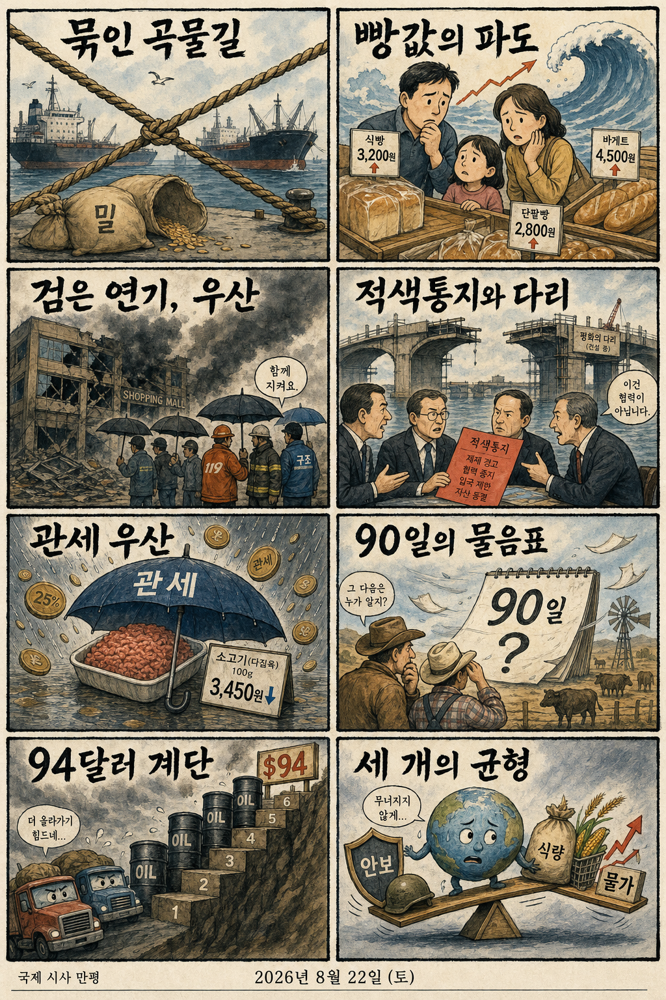
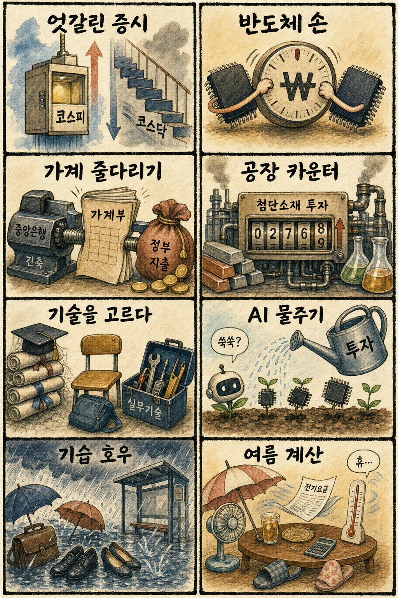

01
마벨 · 252.39→237.04달러 · -6.08%
내용요약 맞춤형 AI 반도체 설계주 마벨이 시가 대비 6.08% 급락해 조사 대상 중 낙폭이 가장 컸습니다.
예상여파 국내 AI 반도체 설계·패키징 연결주에는 월요일 단기 심리 부담이 될 수 있습니다.
MORNING_BRIEFING_20260822
작성 시각: 2026-08-22 06:39 KST · 직전 미국 정규장과 2026-08-22 KST 당일 공개 기사 기준
8월 21일 미국 정규장은 강한 경제지표와 전일 하락 뒤 저가매수 유입으로 3대 지수가 반등했습니다. 다우 +0.98%, S&P 500 +0.43%, 나스닥 +0.44%였습니다. 테슬라와 팔란티어가 시가 대비 각각 +3.75%, +3.43%로 강했지만 마벨 -6.08%, 인텔 -2.91%, 어플라이드 머티어리얼즈 -2.22% 등 반도체는 약했습니다. 한국 증시는 토요일 휴장이라 즉시 거래 영향은 없고, 월요일 개장 전 주말 뉴스와 다음 주 엔비디아 실적 기대를 함께 반영해야 합니다.
| 지수 | 종가 | 등락률 | 한국 증시 시사점 |
|---|---|---|---|
| 다우존스 | 53,277.01 | +0.98% | 경기민감 심리 회복 |
| S&P 500 | 7,674.37 | +0.43% | 저가매수 유입 |
| 나스닥 종합 | 26,180.46 | +0.44% | 지수 반등·반도체는 혼조 |
저가매수 유입으로 +0.43~+0.98% 올랐습니다.
마벨 -6.08%, 인텔 -2.91%로 지수 반등에서 소외됐습니다.
금요일 KOSPI +0.88%, KOSDAQ -4.63%였습니다.
국내 증시 휴장으로 신규 진입 후보를 내지 않습니다.
8월 21일 보고서는 급반등 다음 날의 갭 위험과 검증 표본 부족으로 공식 추천을 내지 않았습니다. 게시 당시 판단은 그대로 유지되며 사후 종목을 추가하지 않습니다.
| 시장 | 종가 | 등락률 | 해석 |
|---|---|---|---|
| KOSPI | 6,912.95 | +0.88% | 21일 시가 대비 +2.26% |
| KOSDAQ | 801.94 | -4.63% | 시가 대비 -2.68% |
| 다우존스 | 53,277.01 | +0.98% | 경기민감 반등 |
| S&P 500 | 7,674.37 | +0.43% | 저가매수 유입 |
| 나스닥 | 26,180.46 | +0.44% | 반도체는 혼조 |
테슬라는 시가 대비 +3.75% 반등했습니다.
팔란티어는 시가 대비 +3.43%였습니다.
마벨 -6.08%, 엔비디아 -1.69%였습니다.
어플라이드 머티리얼즈는 시가 대비 -2.22%였습니다.
내용요약 맞춤형 AI 반도체 설계주 마벨이 시가 대비 6.08% 급락해 조사 대상 중 낙폭이 가장 컸습니다.
예상여파 국내 AI 반도체 설계·패키징 연결주에는 월요일 단기 심리 부담이 될 수 있습니다.
내용요약 전일 약세 뒤 저가매수가 유입되며 시가 대비 3.75% 반등했습니다.
예상여파 미국 성장주 위험선호 회복 신호지만 국내 2차전지는 KOSDAQ 약세와 수급을 별도로 봐야 합니다.
내용요약 AI 소프트웨어 수요 기대 속에서 시가 대비 3.43% 상승했습니다.
예상여파 국내 AI 소프트웨어 테마 심리에는 긍정적이나 실적 검증 없는 추격은 피해야 합니다.
내용요약 미국 지수 반등에도 시가 대비 2.91% 하락하며 반도체 약세가 이어졌습니다.
예상여파 반도체 업종 내부의 실적·공정 경쟁력 차별화가 국내 대형주와 소부장에도 영향을 줄 수 있습니다.
내용요약 반도체 장비주가 시가 대비 2.22% 하락해 나스닥 반등에서 소외됐습니다.
예상여파 국내 장비주는 다음 주 엔비디아 실적과 실제 수주 흐름을 확인하기 전 기대만으로 추격하지 않는 편이 안전합니다.
오늘은 토요일로 국내 증시가 휴장합니다. 금요일 KOSPI는 대형 반도체 강세에 +0.88% 올랐지만 KOSDAQ은 -4.63% 급락해 시장 체감이 크게 엇갈렸습니다. 미국 3대 지수 반등은 월요일 위험선호에 완충 요인이지만 마벨·인텔·반도체 장비주 약세는 소부장 추격에 부담입니다. 주말 동안 흑해 곡물 수출 차질과 브렌트유 94달러대 상승이 물가·금리 기대에 미치는 영향을 확인하고, 월요일에는 시초가 갭보다 외국인 현·선물 수급과 KOSDAQ 안정 여부를 우선 봅니다.
오늘은 추천 없음 — 현금 관망
토요일 국내 증시 휴장으로 당일 시가 진입 기준을 세울 수 없습니다. 전일까지의 수급·컨센서스·30건 이상 유사 조건 확률 보정·예상 손익비 1.5 이상을 동시에 검증할 신규 후보도 없어 종합점수와 확률을 임의로 만들지 않습니다.
관심 연결종목 대형 반도체, AI 소프트웨어, 곡물·식품, 정유는 월요일 관찰 대상일 뿐 매수 추천이 아닙니다. 주말 뉴스만으로 장전 급등이 예상되는 종목은 추격매수 금지입니다.
신규 매수 대신 월요일 갭 위험과 주문 계획을 점검합니다.
다음 주 반도체 기대와 과열을 함께 봅니다.
운송·화학 원가와 국내 물가 전이를 확인합니다.
국지성 호우, 침수, 온열질환에 함께 대비합니다.
핵심 요약: AI 투자 경쟁은 데이터센터 규제·전력과 보안 검증 비용을 동시에 드러내고 있습니다. 국내 벤처자금은 AI·반도체·로봇에 집중되지만 높은 기업가치와 보안 취약성까지 함께 점검해야 합니다.
내용요약 AI 데이터센터 관련주가 한 주 동안 약세를 보인 가운데 규제 부담이 투자심리를 제약했다는 시장 보도입니다.
예상여파 전력·인허가·데이터 규제가 성장률 기대보다 빠르게 주가에 반영될 수 있어 국내 데이터센터 연결주도 실적과 밸류에이션을 구분해야 합니다.
내용요약 앤트로픽이 대규모 클라우드 크레딧을 활용해 AI 보안 실험과 평가 범위를 넓힌다는 기술시장 보도입니다.
예상여파 모델 경쟁이 성능에서 안전성·통제·검증 비용으로 확장되며 보안 도구와 평가 인프라 수요가 늘 수 있습니다.
내용요약 AI와 로봇이 글로벌 신규 유니콘 탄생과 벤처자금 흐름을 주도하고 있다는 투자시장 기사입니다.
예상여파 자금 집중은 혁신 속도를 높이지만 높은 기업가치와 회수시장 부진이 동시에 커질 수 있어 옥석 가리기가 중요합니다.
내용요약 국내 벤처투자가 8.9조원으로 확대되고 AI·반도체·로봇 분야에 자금이 집중된 흐름을 다룬 기사입니다.
예상여파 딥테크의 연구개발과 채용에는 긍정적이지만 특정 분야 쏠림과 후속투자 격차가 커질 가능성도 있습니다.
내용요약 조사 대상 미니앱 다수에서 인증정보와 토큰 관리 결함이 발견됐다는 보안 보도입니다.
예상여파 AI 서비스의 미니앱 확산이 빠를수록 실행 중 저장·전송까지 포함한 보안 검증과 공급망 관리가 핵심 비용이 됩니다.
핵심 요약: 흑해 곡물 수출이 사실상 마비되고 우크라이나 민간시설 피해가 커지면서 식량·안보 위험이 동시에 높아졌습니다. 미국은 식품물가를 낮추려 쇠고기 관세를 한시 면제했지만, 중동 불안으로 브렌트유가 94달러대로 올라 물가 압력이 엇갈립니다.
내용요약 러시아와 우크라이나의 흑해 교전 격화로 양국 곡물 수출이 97% 이상 중단됐다는 연합뉴스 보도입니다.
예상여파 밀·옥수수 공급 차질이 길어지면 국제 곡물가와 국내 식품·사료 원가가 오르고 취약국의 식량안보가 악화할 수 있습니다.
내용요약 러시아 드론이 우크라이나의 쇼핑센터를 두 차례 공격해 다수 사상자가 발생했다는 국제 보도입니다.
예상여파 민간 피해 확대는 휴전 외교를 어렵게 하고 유럽의 방공·인도지원 부담을 높일 수 있습니다.
내용요약 미국이 물가 부담을 낮추기 위해 다진 쇠고기 초과 관세를 90일간 면제했다는 보도입니다.
예상여파 식품물가 완화에는 도움이 될 수 있지만 미국 목장업계 반발과 무역 상대국별 수입 경쟁이 커질 수 있습니다.
내용요약 튀르키예가 가자 구호선단 나포 혐의와 관련해 이스라엘 총리에 대한 인터폴 적색수배를 요청했다는 보도입니다.
예상여파 법적·외교적 충돌이 심화하면 가자 휴전과 역내 협상 채널이 더 좁아질 수 있습니다.
내용요약 중동 불안이 이어지며 국제유가가 6거래일 연속 상승하고 브렌트유가 94달러대로 올라섰다는 보도입니다.
예상여파 에너지 수입국의 물가와 운송·화학 원가 부담이 커지고 금리 완화 기대가 약해질 수 있습니다.

핵심 요약: 금요일 KOSPI와 KOSDAQ이 크게 엇갈린 가운데 대형 반도체 수급은 환율에도 영향을 주고 있습니다. 통화긴축과 확장재정의 정책 조합, 첨단 소부장 지원, 전국 비·소나기와 폭염이 다음 주 경제와 생활의 핵심 변수입니다.
내용요약 미국 금리 충격으로 변동성이 커진 국내 증시에서 다음 주 엔비디아 실적이 반도체 방향의 분수령이 될 수 있다는 전망입니다.
예상여파 대형 반도체 기대가 높아진 만큼 실적 전후 변동성과 KOSPI·KOSDAQ 차별화가 이어질 수 있습니다.
내용요약 삼성전자와 SK하이닉스의 주주환원 기대와 외국인 자금 흐름이 원화 강세에 힘을 보탠다는 분석입니다.
예상여파 대형 반도체 수급이 환율과 지수를 함께 움직이면 수출주 환산이익과 외국인 매매의 상호작용이 더 커질 수 있습니다.
내용요약 첨단산업 소재·부품·장비 기업 대상 투자지원금 접수 기간이 연장됐다는 정책 기사입니다.
예상여파 설비투자와 공급망 국산화에는 도움이 될 수 있으나 실제 선정·집행 속도와 기업별 수혜 규모를 확인해야 합니다.
내용요약 통화긴축 기조와 대규모 재정지출 계획이 동시에 추진되는 정책 조합을 다룬 기사입니다.
예상여파 금리·물가·채권시장 신호가 엇갈리면 가계 이자부담과 정부 조달비용, 원화 변동성이 커질 수 있습니다.
내용요약 전국에 비 또는 소나기가 내리고 낮 최고 34도의 무더위가 이어진다는 당일 기상 기사입니다.
예상여파 주말 이동 중 국지성 호우와 침수에 대비하고 온열질환·전력 피크도 함께 관리해야 합니다.
